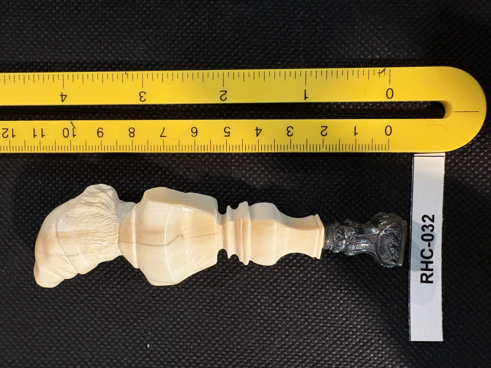
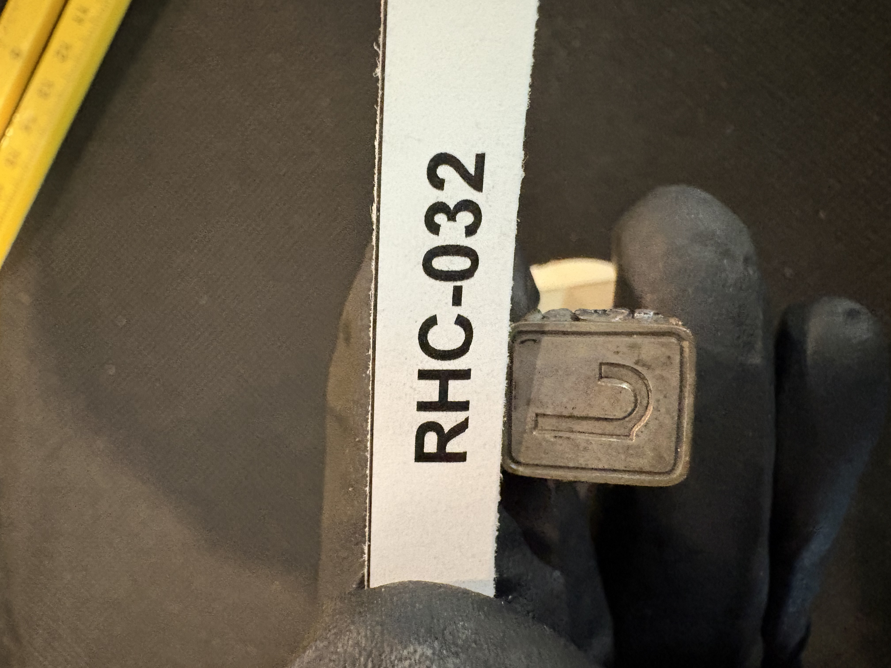

RHC-032 reviewed
Carved Figural Seal Handle, Man's Bust, with Turned Shaft and Metal Seal Die Engraved "J" (per T. M. Cornelia)


- Object Type
- Carved figural desk/wax seal — a man's head/bust (per T. M. Cornelia, not bearded; likely wearing a cap or hood) carved at one end, transitioning into a turned baluster-form shaft, set into a dark metal (pewter or silver-toned) seal die at the opposite end. The metal terminus is the seal's engraved die face, not a broken hook as initially misread — per T. M. Cornelia, it bears the letter "J", intended for stamping a wax seal.
- Material
- Presumed ivory or bone for the carved figural/shaft portion (smooth cream-white surface); ferrule is a dark tarnished metal, likely pewter or silver.
- Dimensions (cm)
- length: 12.0cm — Overall length (~12.0cm) estimated off the cm scale shown in the photos.
- Subject Matter
- A man's head and shoulders (bust), wearing what appears to be a peaked cap or hood and a buttoned coat/collar, carved in high relief at one end of the handle (per T. M. Cornelia, the face is not bearded). The bust transitions into a plain turned baluster-form shaft, then into the metal seal die.
- Inscriptions
- “Letter "J" (per T. M. Cornelia's reading)”
- “Letter "J" (per T. M. Cornelia's reading)”
- Artist Attribution
- unknown
- Date / Period
- undated (stylistic estimate: 19th-early 20th c., consistent with Victorian figural sewing/dressing implements)
- Mount / Display Stand
- None — unmounted handle, photographed loose.
- Color / Technique
- Carved relief detail on the figural bust (facial features, cap, buttoned coat) with a plain turned shaft; natural material coloring only, no ink or paint. Metal ferrule is unadorned aside from the raised device noted above.
- Condition Notes
- A hairline crack is visible in the shaft in RHC-032-b.jpg. Otherwise the carved bust, shaft, and metal seal die appear intact. Not physically examined.
- Distinguishing Features
- The first figural carved handle in the collection depicting a human portrait bust rather than an animal or scene, and the first desk/wax seal in the collection, combining a carved ivory/bone handle with a fitted metal seal die engraved "J". The initial "J" may relate to a family name or original owner, worth investigating.
- Legal / Regulatory Status
- Material not confirmed. If genuine ivory, age/species would need confirmation before any loan/sale. Flag for legal review; not a legal determination.
- Rights / Copyright
- No attribution identified; copyright status undetermined.
- Keywords
- figural handle man's bust wax seal desk seal seal die letter J metal ferrule turned shaft not flat-engraved
- Status
- reviewed
- Date Cataloged
- 2026-07-15
Open Research Questions
Research finding (phase 3, 2026-07-15): No family-name or prior-owner record search is possible from a general web search for a single initial ('J') on a seal die — this would only be resolvable from Mike's own family provenance knowledge, not external research.